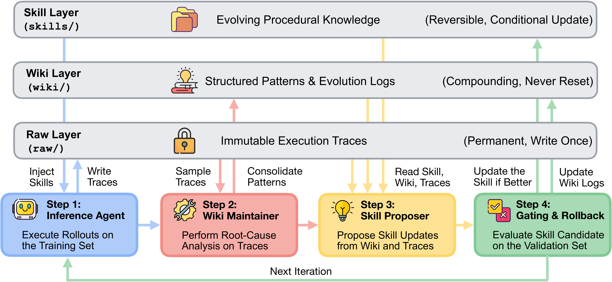

01研究背景与问题定义
技能自进化通常保留当前最好的技能文件，却把产生它的诊断、失败补丁和未被采纳的线索留在零散历史里。下一轮只能重新读日志，容易重复尝试已经失败的改法；直接把所有历史塞给执行者，又会让调试知识干扰正式任务。WikiSkill 将原始经历、研究知识和当前可执行规则分成三个独立层级。
原始轨迹只写不改，wiki 持续归纳模式与演化结果，技能则是通过验证才启用的程序。最关键的非对称更新是：技能退回旧版本时，wiki 不退回。一次失败提案不进入执行路径，却仍成为下一次提案的知识。这把“保留最好行为”与“保留全部有用经验”同时表达出来。
| 层 | 主要用途 | 更新与使用边界 |
|---|---|---|
| Raw | 保留可重新检查的执行事实。 | 不可变；供维护与提案代理取证。 |
| Wiki | 保存失败模式、有效策略、修改历史与影响。 | 持续累积；不随技能回退而丢失。 |
| Skills | 给执行代理明确的当前程序。 | 严格验证提升才接受；正式执行不依赖 wiki。 |
这不是每次执行都检索知识库的记忆系统。论文默认把完整活跃技能注入执行提示，刻意减少触发和检索失败的混淆，把研究重点放在技能是怎样被发现和修正的。
02方法与技术路线
循环从空技能和空 wiki 开始，执行训练任务、维护知识、提出单个技能修改，再由验证决定技能版本；程序自动把接受或拒绝写入影响日志。
Inference Agent
只读当前完整技能，执行训练任务；不读 wiki，产生不可变 raw 轨迹。
Wiki Maintainer
根因分析与成功策略归纳；增量修改 pattern 页面、索引和演化日志。
Skill Proposer · ReAct
一次只创建或增量修改一个技能；PURPOSE 将技能关联到来源模式。
严格提高
接受候选，更新 best；满分则可提前停止。
未严格提高
只回退技能到最近成功版本；wiki 的模式与失败知识不清空。
三层状态：行为可以回退，经验不必回退
Raw 保存推理、工具调用、结果和最终答案，避免后续整理覆盖原始事实。Wiki 将这些轨迹编译为模式文件，包括失败原因、成功策略与可行动修复；另保存演化日志及由程序写入的 skill-impact。Skills 保存当前执行指令，并用 PURPOSE 记录它针对哪些 wiki 模式。
三层区分了证据、解释和执行权：观察真实不代表解释正确，解释有价值也不代表应立即执行。特别是被拒提案仍可告诉下一轮哪些规则看似合理但实际无效。如果整个工作区一起回退，这类负知识就会反复丢失。
维护与提案：抽样归纳之后仍允许回看原文
维护者读取已有 wiki 和分层抽样的成功、失败轨迹，创建或增量修改模式页面，更新索引并追加本轮发现。它不为每轮规定固定新模式数量，由模型判断证据是否需要新增或修订。
提案者最初得到 wiki 索引、影响日志和全部训练任务的简洁结果摘要，再用工具按需读具体页面和原始轨迹，而非一次塞入所有日志。它以多轮 ReAct 诊断后提出原子修改，一次只针对一个技能。这样的写入单位便于将验证变化关联到具体补丁，但归因仍受任务随机性和验证集大小影响。
严格门控与只读执行：知识不能替代技能质量
候选验证得分必须严格超过历史最好才接受；相等也回退。程序随后记录提案元数据、完整差异、分数和结果；wiki 无论接受与否都保留。验证达到满分则停止，因此高基线任务可能没有演化技能。
执行代理默认完整读取活跃技能而不访问 wiki，避免它依靠尚未编译的经验弥补技能缺口。否则优化器可能看到“当前技能执行得还行”，却不知道是 wiki 临时救场。这里隔离的目的主要是测清技能发展，而不是声明 wiki 永远不适合用于任务推理。
论文原始结构图 · 点击对照

03实验设计与结果分析
增益是否只是强模型更会执行相同提示
五任务平均，三次完整演化平均；选取 Qwen 家族的规模趋势与 OfficeQA 反例。
| 模型 | 无技能平均 | WikiSkill 平均 | OfficeQA 无 / 有技能 |
|---|---|---|---|
| Qwen3.5-4B | 26.2 | 38.5 | 30.2 / 28.5 |
| Qwen3.5-9B | 29.9 | 47.4 | 35.9 / 40.5 |
| Qwen3.6-27B | 39.4 | 63.3 | 42.1 / 53.7 |
平均增益随这些模型的能力扩大，支持外部程序和模型能力互补；9B 加技能的平均分超过无技能 27B，也说明程序知识能弥补部分规模差距。但 4B 的 OfficeQA 回归表明，能发现有用步骤不等于能在长上下文中贯彻。
跨模型转移进一步拆开这两件事：4B 产生的 OfficeQA 技能降低自己分数，却提升 27B。反过来，4B 的表格技能让 Gemini 从 50.5 降至 18.1，显示模型特定绕行规则可能严重负迁移。
wiki 的用途在执行还是在发展技能
Gemini-3.5-Flash，四任务平均，ALFWorld 因起始验证满分不演化而未纳入此表。
| 执行者可读 wiki | 提案者可读 wiki | 平均 |
|---|---|---|
| 否 | 否 | 48.7 |
| 是 | 否 | 45.3 |
| 否 | 是（默认） | 63.7 |
| 是 | 是 | 60.9 |
把 wiki 给提案者带来最大改善，而允许执行者同时读取反而下降。这支持把经验编译成干净技能再执行，而不是简单地给所有角色更多信息。没有提案者 wiki 的设置也去掉维护者，因而这里检验的是持久知识整套支持，不能只归因于一个文件。
各框架的优化调用结构不同，论文附录有复杂度分析，但平均分不是等货币成本结论；完整技能注入也没有检验大规模库检索。部署到更大库时，技能选择会重新成为问题。
04贡献、局限与综合评价
核心贡献：为技能研究保留可累积的知识层
WikiSkill 的持久思想是让成功执行程序与开发知识拥有不同生命周期。技能只保留验证认可版本，wiki 则保存失败的认识增量；原始轨迹提供重新解释的机会。主结果、wiki 访问消融和模型间迁移共同支持这种架构，且揭示了发现程序与执行程序是两种能力。
不回退知识也会保留错误解释
验证能拒绝某个技能，却不自动纠正导致它的 wiki 诊断。若维护者把错误根因写成模式，失败提案可能只被解释成实现不好，后续仍沿同一假设搜索。持久化因此同时累积正负证据与解释偏差；完整原始日志可查，并不意味着代理一定会回查。
可构造根因相近而作用条件改变的任务序列，让候选被拒后观察 wiki 是否修正原因，并对比保留全部模式、按反证修订模式和只保留接受经验。若全部保留重复错误，而反证修订更好，说明下一步价值在知识可撤销性，不只是保存更久。
综合判断，论文有力地说明开发经验不应被当前技能快照替代。它证明了这套非对称记忆在多任务、多模型下有用，也通过负迁移限定了“技能可迁移”的条件：程序必须适合使用者能力，开发知识必须能被反证更新。